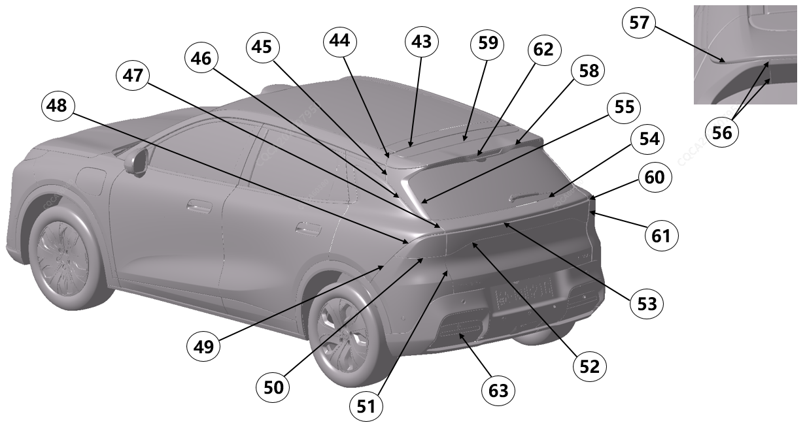

|
Расположение |
Подробное описание |
Допустимый размер зазора (mm) |
Допустимый размер перепада по плоскости (mm) |
|---|---|---|---|
|
43 |
Узел двери задка относительно крыши |
5.0～8.0，P≤1.5 |
-2.5~0.5，P≤1.5 |
|
44 |
Узел спойлера относительно боковины |
3.9~6.9/2.5～5.5，P≤1.5 |
-2.5~0.5 |
|
45 |
Декоративная панель спойлера относительно декоративной панели боковины |
3.0～6.0，P≤1.5 |
-2.5~0.5，P≤1.5 |
|
46 |
Декоративная панель спойлера относительно боковины |
2.5～5.5，P≤1.5 |
/ |
|
47 |
Дверь задка относительно боковины |
2.8～5.2，P≤1.2，S≤1.5 |
-2.4~0 |
|
48 |
Задний фонарь A относительно боковины |
0.1～2.7，P≤1.2 |
/ |
|
49 |
Задний бампер относительно боковины |
0～1.0 |
-1.2~0.2 |
|
50 |
Задний фонарь A относительно заднего бампера |
0.3～2.7，P≤1.2 |
/ |
|
51 |
Дверь задка относительно заднего бампера |
2.5~5.5，P≤1.5，S≤2.0 |
-3.5~-0.5 |
|
52 |
Сквозная фара относительно нижней части двери задка |
0.1～2.7，P≤1.5 |
/ |
|
53 |
Сквозная фара относительно верхней части двери задка |
0.1～2.7，P≤1.5 |
/ |
|
54 |
Заднее стекло относительно двери задка |
0 (прилегание резины) |
/ |
|
55 |
Декоративная панель спойлера относительно заднего ветрового стекла |
0.3~3.0 |
/ |
|
56 |
Декоративная панель спойлера относительно спойлера (по осям X/Z) |
0～1.0，P≤0.5 |
-0.5～0.5 |
|
57 |
Декоративная панель спойлера относительно спойлера |
0～1.0，P≤0.5 |
/ |
|
58 |
Верхняя часть спойлера относительно нижней части спойлера |
0～1.0，P≤0.5 |
/ |
|
59 |
Спойлер относительно узла двери задка |
0.3～3.0 |
/ |
|
60 |
Задняя сквозная фара относительно заднего фонаря A (по оси Z) |
2.5~5.5，S≤2.0 |
-2.5~1.0，S≤2.0 |
|
61 |
Задняя сквозная фара относительно заднего фонаря A (по оси X) |
2.5~5.5，P≤1.5，S≤2.0 |
-2.5~0.5，P≤1.5，S≤2.0 |
|
62 |
Дополнительный стоп-сигнал относительно спойлера |
0.3~1.7，P≤0.7 |
/ |
|
63 |
Световозвращатель относительно заднего бампера |
0.3~1.7，P≤0.7 |
/ |
